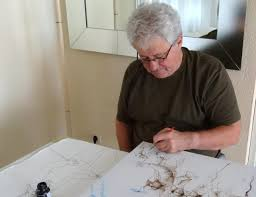

|
- JEAN CLAUDE COENEGRACHT -
PITTORE DEL PALIO DEL 16 AGOSTO 2016 |
|
Jean-Claude Coenegracht, nato a Liegi il 29 settembre 1948, ha compiuto i suoi studi all’Académie Royal des Beaux-Arts di Liegi (1964-1970) in disegno, incisione e pittura. Malgrado il cognome fiammingo la sua pittura reca evidente l’impronta della cultura nordica. I soggetti che predilige richiamano e reinterpretano modelli che Coenegracht rielabora con estro surreale, memore dell’eredità di Bosch, Dürer, Rembrandt.

Numerose le personali: Liegi (1970-1976-1988), Bruxelles (1984-1988-1995-2005- 2014-2015), Namur (1990), Anversa (1995), Basilea (1983-1984), Stoccarda (1996), Parigi (1984-1985), Nizza (1983), Milano (1983), Praga ( 2003), Colonia (2001-2015), Biarritz (2012-2015). Molto si è dedicato all’illustrazione di libri. Nell’opera “Palio” del 1987 non dipinse lo spettacolo, come notò la critica, ma la prorompente forza e il fascino ombroso di una celebrazione intrisa di senso del sacro e di sfrenata voglia di primato. Coenegracht è un solitario della pittura, un asceta appassionato che predilige dipingere su seta e antichi tessuti al modo orientale. La critica ha messo in relazione il suo mondo con un celebre testo di Margherite Yourcenar, con quanto la grande scrittrice attribuisce a Zenone: “la strana instabilità e il bizzarro ordine dei sogni”. Come ha scritto Marie Claude Soulé a proposito della recente esposizione di Biarritz “sa sempre introdurre un tocco di fantastico e di misterioso nella scene dei suoi quadri che raggruppano personaggi stupefacenti, e quando evocano i capolavori antichi li attualizzano collocandoli in ambienti onirici di singolare effetto”. Jean Claude Coenegracht ha un’ammirazione autentica per la Festa senese, che ha visto e vissuto decine di volte soprattutto cogliendo i momenti più segreti di un universo figurativo conosciuto e amato in tutta Europa. Coenegracht si è da poco trasferito a Tournai (Bruxelles) dove ha l’atelier.
 

  ASCOLTA L'INTERVISTA   |